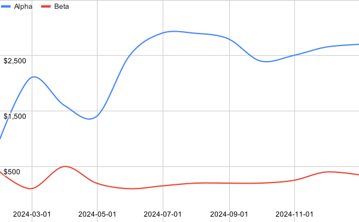
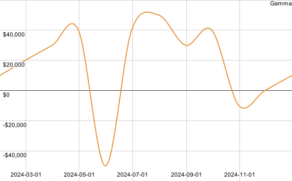

Let's talk about simple financial analysis with LLMs. I would even call it "amateur" financial analysis. I'm not saying this is the best approach or that anyone should rely on it for personal decisions. But isn't that the default assumption when using any LLM? It can hallucinate, it can be wrong, yet it can also provide food for thought—an insight that otherwise would've taken much longer to come up with.
In this post, I'm not focusing on how to manage expenses. I assume they're already managed effectively enough that we can trust the accuracy of the data. That data could be tracked manually or retrieved via an API from a bank or credit card company. So let's go straight into the problem at hand.
Suppose we have a table summarizing savings accounts month by month. We assume there are several such accounts. It could also be different investments within a single account. For example, one account might allow you to buy various stocks and invest in mutual funds. That means each account could represent a particular type of investment. It would be interesting to compare these funds' results and decide whether more investment should go into one or another.
I generated some synthetic data for this experiment, featuring four accounts: Alpha, Beta, Gamma, and Ironclad. The last one, with the odd name, represents a bank account. It's the least interesting of the four; I'm mostly including it as a basiline for the analysis. The CSV file contains each account's purpose, along with explanations for every transaction. You can download the test data from here.
Below is a summary of the Alpha and Beta accounts in one chart:
They both have a similar scale, which allows them to share one chart. That's not the case for the Gamma account, which is wildly different, showing extreme swings in income and losses. It will be interesting to see how an LLM analyzes that:
Gamma's fluctuations are unpredictable and quite dramatic. Even a logarithmic scale wouldn't help much if I tried to put all these graphs on a single chart. Splitting them up works better, and hopefully it's visually clear for you, the reader, as well.
Now, let's ask an LLM for its advice:
You are a personal finance consultant. Below is CSV-formatted data showing historical changes in various financial accounts of an individual. This individual plans to continue investing for the next 5-10 years. Risk tolerance: low. Your task is to analyze the data and provide a concise summary for each account, focusing on:
[Insert CSV data here]
I specifically asked the LLM not to generate graphs. In my analysis, it wouldn't be helpful, though in other scenarios it could be valuable.
In every iteration, ChatGPT 4o suggested keeping the Gamma account—even for a low risk tolerance. That's a bit odd, because before making any investment decisions, one must understand two things:
If you panic when stocks go down, you'll withdraw your money prematurely, even if you planned to keep your investment for years. I'm not a financial advisor, but that seems like common sense. Thus, for someone with low risk tolerance, investing in a high-volatility account like Gamma wouldn't be advisable.
By contrast, ChatGPT o1 responds differently. Here's how it handles a "low risk" tolerance:
Recommendation for "Alpha": Given the net positive returns and relatively smaller swings compared to Gamma, it may suit a low-risk tolerance. Consider continuing to invest.
Recommendation for "Beta": Continue investing if comfortable with its relatively minor volatility, though it may be worth exploring more stable or slightly higher-yield alternatives.
Recommendation for "Gamma": Because of its significant volatility and the individual's low risk tolerance, consider reducing exposure or liquidating part of it. Only continue if prepared for substantial swings.
Recommendation for "Ironclad": Continue. It's stable, no downside. For low risk tolerance, keeping this account is sensible.
I like this answer. Beta indeed underperforms, and Gamma is too unstable for someone with low risk tolerance.
For a "high risk" tolerance, it says:
Recommendation for "Alpha": Continue investing. The gains outweigh the losses so far, and the account could deliver moderate growth over 5–10 years.
Recommendation for "Beta": Keep investing. The account's overall positive performance and relatively modest volatility make it a reasonable holding.
Recommendation for "Gamma": Continue investing. The significant swings suggest Gamma can yield substantial returns over a 5–10 year horizon for someone willing to accept short-term losses.
Recommendation for "Ironclad": Retain for liquidity and routine financial needs. There's no compelling reason to liquidate a stable salary account.
I like how ChatGPT adjusts its advice for Gamma under a high risk tolerance. Personally, I'd do the same. "Correctness" is a fuzzy concept here. I never explicitly stated that one possibility is to sell an account and move all the money elsewhere—though that can be an option if you're willing to assume more risk.
I decided to clarify that option with the following prompt:
For this individual with high risk tolerance, should they consider closing some financial accounts to consolidate funds into one that better suits their needs? What would you suggest?
The output made sense:
Consolidation makes sense if you find Beta redundant. You could merge Beta's balance into Alpha or Gamma, depending on how aggressively you want to invest. Keep Ironclad intact for salary and monthly cash flow, and maintain or increase your allocation to Gamma (or Alpha) according to your comfort with short-term volatility.
Gemini, on the other hand, tends to follow the user's instructions more strictly and accounts for risk tolerance more carefully.
For a "low risk" tolerance, it says:
Recommendation for "Alpha": Continue investing with caution. Monitor the performance closely. While there is consistent investment income, the fluctuations might not align with a low-risk tolerance. Consider exploring more stable, low-risk investment options if consistent growth is desired.
Recommendation for "Beta": Consider liquidating this account and reallocating the funds to a more stable investment option that aligns with a low-risk profile. The inconsistency and recurring losses are not ideal for someone with low-risk tolerance seeking steady growth.
Recommendation for "Gamma": Strongly recommend liquidating this account immediately. The significant losses and high volatility are not in line with a low-risk investment strategy and could pose a substantial financial risk. Investigate the nature of the investments within this account to understand the source of the losses.
Recommendation for "Ironclad": Continue using this account for salary deposits and as a safe holding place for funds. This aligns with a low-risk profile for short-term financial needs.
I largely agree. Although Beta might look less risky, it hasn't produced notable returns in a long time, which makes it unappealing. With only this data, we can't predict whether Beta will suddenly change in the future.
For a "high risk" tolerance, it says:
Recommendation for "Alpha": Continue investing in this account. The volatility suggests it might be invested in assets with higher growth potential, aligning with the individual's risk tolerance.
Recommendation for "Beta": Continue investing in this account but closely monitor its performance. If the inconsistent performance persists, consider re-evaluating the investment strategy within this account or liquidating and reallocating to potentially higher-performing, high-growth investments.
Recommendation for "Gamma": Continue investing in this account with extreme caution and diligent monitoring. The significant fluctuations suggest a very high-risk investment strategy. Ensure this level of risk is truly aligned with the individual's understanding and tolerance. If the investment strategy is not well-understood or if the losses become unmanageable, consider liquidating a portion or all of this account and re-evaluating the investment approach.
Recommendation for "Ironclad": Consider liquidating funds beyond immediate needs from this account and reallocating them to investments with higher growth potential, given the long-term horizon and high-risk tolerance. Maintaining a reasonable emergency fund within this account is advisable.
Gemini also advises investing across the board, which isn't surprising given that I didn't say accounts could be merged. What's unique is the suggestion to liquidate part of the bank account, Ironclad. That's a valid idea for someone with high risk tolerance, and it wasn't even hinted at in my prompt.
When I explicitly asked about consolidation:
For this individual with high risk tolerance, should they consider closing some financial accounts to consolidate funds into one that better suits their needs? What would you suggest?
Gemini responded in summary:
Recommendation: Consider consolidating funds from the Ironclad (Bank) account into the investment-oriented Savings accounts (Alpha, Beta, and potentially explore other high-growth options).
This time, I found it less impressive because Gemini just repeated its advice about the bank account. In this situation, I’d also expect a suggestion to combine or reallocate funds from the other accounts, not just the bank.
For this small task, a reasoning-based model (rather than a quick one) provides better results, as it can address more of the data points I include. However, it’s hard to declare a clear winner between ChatGPT and Gemini—both have strengths and weaknesses. Perhaps the best approach is to consult multiple models, gather information, and then make your own decisions.
It’s also important to note that my experiment involved a very small dataset, which might not reflect real-world scenarios. I plan to continue exploring this topic and will share new findings in future posts.
Caution Notice
Before using GPTs from the ChatGPT “Marketplace,” be aware that some may push referral links—particularly in finance-related areas, where they might encourage you to purchase crypto through their links. You should never blindly trust whatever they say.